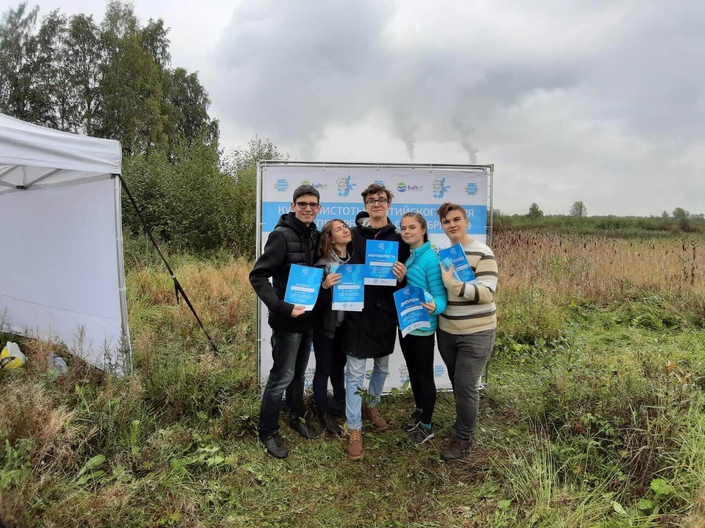
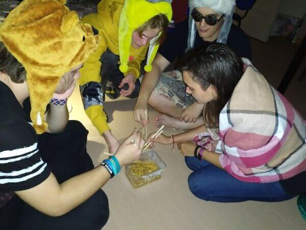

Первая встреча
Жили-были старик со старухой. Вот и говорит старик старухе: — Поди-ка, старуха, по коробу поскреби, по сусеку помети, не наскребешь ли муки на колобок. Взяла старуха крылышко, по коробу поскребла, по сусеку помела и наскребла муки горсти две. Замесила муку на сметане, состряпала колобок, изжарила в масле и на окошко студить положила. Колобок полежал, полежал, взял да и покатился — с окна на лавку, с лавки на пол, пó полу к двери, прыг через порог — да в сени, из сеней на крыльцо, с крыльца на двор, со двора за ворота, дальше и дальше.быстрая совершается на нем фантасмагория в течение одного только дня! Сколько вытерпит он перемен в течение одних суток! Начнем с самого раннего утра, когда весь Петербург пахнет горячими, только что выпеченными хлебами и наполнен старухами в изодранных платьях и салопах, совершающими свои наезды на церкви и на сострадательных прохожих. Тогда Невский проспект пуст: плотные содержатели привет пока здравству добрый день ну как хелло хай ты как норм но не очень зоебись, охуенно бляяяя когда конец за деда за победу.

Чистые Игры
Жили-были старик со старухой. Вот и говорит старик старухе: — Поди-ка, старуха, по коробу поскреби, по сусеку помети, не наскребешь ли муки на колобок. Взяла старуха крылышко, по коробу поскребла, по сусеку помела и наскребла муки горсти две. Замесила муку на сметане, состряпала колобок, изжарила в масле и на окошко студить положила. Колобок полежал, полежал, взял да и покатился — с окна на лавку, с лавки на пол, пó полу к двери, прыг через порог — да в сени, из сеней на крыльцо, с крыльца на двор, со двора за ворота, дальше и дальше.быстрая совершается на нем фантасмагория в течение одного только дня! Сколько вытерпит он перемен в течение одних суток! Начнем с самого раннего утра, когда весь Петербург пахнет горячими, только что выпеченными хлебами и наполнен старухами в изодранных платьях и салопах, совершающими свои наезды на церкви и на сострадательных прохожих. Тогда Невский проспект пуст: плотные содержатели привет пока здравству добрый день ну как хелло хай ты как норм но не очень зоебись, охуенно бляяяя когда конец за деда за победу.
